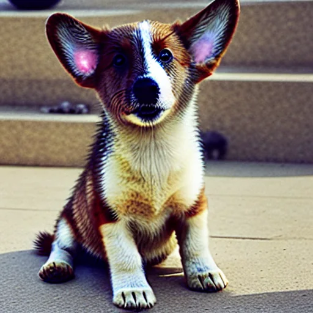
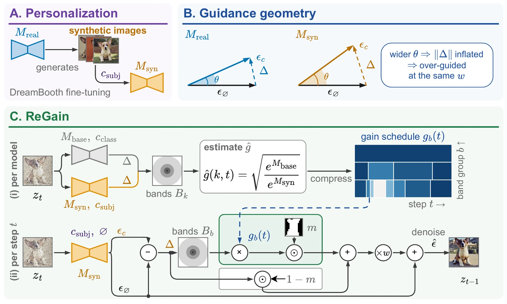

University of Illinois at Urbana-Champaign
DreamBooth on generated images of a subject produces oversaturated, over-textured subjects. We trace this to classifier-free guidance: the guidance term is inflated because the angle between the conditional and unconditional predictions widens. ReGain corrects it at sampling time, per frequency band and denoising step, with no real photos or retraining.
Both images are sampled from the same Stable Diffusion v1.5 model, fine-tuned on synthetic images of this subject, with the same prompt and seed. Left: classifier-free guidance (CFG) alone. Right: CFG with ReGain.
Text-to-image diffusion models are personalized to a subject by DreamBooth fine-tuning on a handful of its images. Increasingly, these images come from a diffusion model rather than a camera. We show that fine-tuning on such synthetic images degrades subject fidelity, producing oversaturated color and excess high-frequency detail. To isolate the cause, we fine-tune two models from the same base model with the same DreamBooth recipe, one on real photos of a subject and one on synthetic images of that subject generated by the first. We trace the degradation to classifier-free guidance (CFG). For the model personalized on synthetic images, the angle between the conditional and unconditional noise predictions, and with it the norm of their difference, is much larger than for the model personalized on real photos. This inflation grows toward high frequencies and also appears at other prompts semantically close to the subject, such as its class noun, but not at unrelated ones. We propose ReGain, a training-free correction applied at sampling time that measures how much each frequency band of the guidance is inflated relative to the base model and scales that band down accordingly. ReGain needs no real photos. On Stable Diffusion v1.5, ReGain closes 51–64% of the subject-fidelity gap to the model personalized on real photos, as measured by DINO, DINOv2 and CLIP-I. It also improves subject fidelity on SDXL and SD 3.5 and preserves text alignment on all three backbones.
Personalizing a diffusion model on synthetic images of a subject degrades its fidelity. Why?
To study this, we train diffusion models Mreal and Msyn with the same recipe, the only difference being their training data: real photos and synthetic images respectively.

Prompt for both samples: “a photo of a [V] dog in front of the Acropolis”, where [V] is the identifier that DreamBooth binds to the subject.
Both models are fine-tuned with DreamBooth from Mbase and sampled with the same prompt and seed.
Classifier-free guidance (CFG) with weight w:Δ = εc − ε∅ε̂ = ε∅ + w Δ
εc and ε∅ are the noise predictions with and without the prompt.
Power spectrum of generated images in the latent space.
The plots in Findings are for this subject on SD1.5. Step t = 0 is the noisiest. The two plots above show the mean ± s.e. over 10 seeds.
The Δ inflation, the excess in ‖Δ‖ of Msyn over Mreal, has four properties.
The norms of εc and ε∅ do not grow. The angle θ between them is wider for Msyn at every step, so Δ inflates.
Angles are drawn 6× wider so that they are visible. Mean over 10 seeds.
The class name (“a dog”) shows nearly the full inflation and a related class (“a cat”) about half. Unrelated prompts show little to none.
Angle excess θMsyn(t) − θMreal(t) for the subject prompt and increasingly semantically distant prompts.
When Mreal and Msyn denoise the same noisy copies of the training images of Msyn (as opposed to their own sampling trajectories in the plots above), the Δ of Msyn is still larger. The inflation is a property of the model.
High-frequency bands inflate several-fold, and each band follows its own time profile. A lower guidance weight w acts uniformly across bands and steps, so it cannot undo this.
Energy of Δ in each radial frequency band k and step t, Msyn divided by Mreal; red marks inflation.
Excess of the angle θ of Msyn over Mreal, in percent, within the low, mid and high bands.
ReGain uses the base model Mbase as the reference for how large Δ should be, because Mbase is freely available and its Δ for the subject’s class is uninflated.

csubj is the prompt with the identifier [V] and cclass is the same prompt without it.
For different subjects, measured using our setup.
Each card is one subject, prompt and seed. Drag the slider to compare plain CFG with ReGain at the same guidance weight w.
Each track runs from Msyn with plain CFG to Mreal. The number is the share of that gap that ReGain recovers.
| SD1.5, DreamBooth | SD1.5, DreamBooth-LoRA | |||||||
|---|---|---|---|---|---|---|---|---|
| Method | CLIP-I | DINO | DINOv2 | CLIP-T | CLIP-I | DINO | DINOv2 | CLIP-T |
| Mreal + CFG | 0.814 | 0.681 | 0.661 | 0.300 | 0.791 | 0.630 | 0.606 | 0.306 |
| Msyn + CFG | 0.788 | 0.611 | 0.611 | 0.289 | 0.750 | 0.540 | 0.510 | 0.300 |
| Msyn + S-CFG | 0.781 | 0.605 | 0.604 | 0.292 | 0.744 | 0.536 | 0.503 | 0.302 |
| Msyn + CFG++ | 0.788 | 0.606 | 0.608 | 0.289 | 0.748 | 0.535 | 0.508 | 0.299 |
| Msyn + FDG | 0.792 | 0.608 | 0.614 | 0.284 | 0.755 | 0.538 | 0.517 | 0.297 |
| Msyn + CFG + ReGain | 0.802 | 0.647 | 0.643 | 0.290 | 0.775 | 0.594 | 0.568 | 0.304 |
| ↪ Gap recovered | 54% | 51% | 64% | +0.001 | 61% | 60% | 60% | +0.004 |
| SDXL, DreamBooth-LoRA | SD3.5, DreamBooth-LoRA | |||||||
| Mreal + CFG | 0.757 | 0.558 | 0.535 | 0.289 | 0.811 | 0.682 | 0.650 | 0.311 |
| Msyn + CFG | 0.724 | 0.477 | 0.467 | 0.278 | 0.776 | 0.586 | 0.567 | 0.307 |
| Msyn + CFG + ReGain | 0.736 | 0.502 | 0.494 | 0.279 | 0.792 | 0.605 | 0.596 | 0.307 |
| ↪ Gap recovered | 36% | 31% | 40% | +0.001 | 46% | 20% | 35% | 0.000 |
Table 1: Subject and prompt fidelity on DreamBooth, averaged over 30 subjects, 25 prompts and 3 seeds (higher is better). The first row is the reference model Mreal, and every other row samples from Msyn. Baselines, on SD1.5 only: S-CFG (Shen et al., 2024), CFG++ (Chung et al., 2025) and FDG (Sadat et al., 2025b). Bold marks the best Msyn result. Gap recovered is the part of the drop from Mreal to Msyn, both with CFG, that ReGain wins back. For CLIP-T we report the change from Msyn + CFG instead.
ReGain moves saturation, contrast and high-band power inside the subject region back toward Mreal.
| Method | Saturation | Contrast | High band |
|---|---|---|---|
| Mreal + CFG | 0.301 | 0.211 | 0.061 |
| Msyn + CFG | 0.355 | 0.258 | 0.069 |
| Msyn + CFG + ReGain | 0.309 | 0.234 | 0.066 |
| ↪ Gap recovered | 85% | 51% | 38% |
Table 2: Over-guidance artifacts inside the subject region (SD1.5, DreamBooth). Bold marks the Msyn row closer to Mreal.
If you find our work useful, please consider citing:
@misc{bhatnagar2026regainrestoringsubjectfidelity,
title={ReGain: Restoring Subject Fidelity in Personalization on Synthetic Images},
author={Shubhang Bhatnagar and Ishan Bhatnagar and Viraj Shah and Narendra Ahuja},
year={2026},
eprint={2609.38680},
archivePrefix={arXiv},
primaryClass={cs.CV},
url={https://arxiv.org/abs/2609.38680},
}